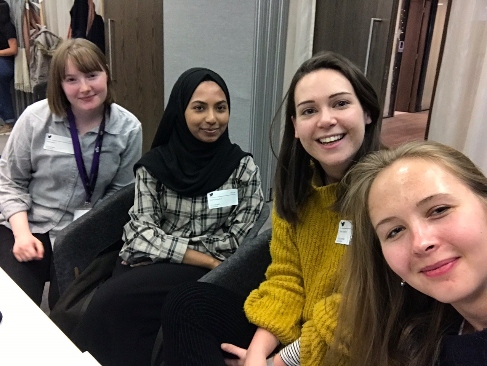

ABOUT Take Me To...
Take Me To... was founded by Team Infinity at Code First: Girls. It stemmed from our own holiday experiences, our attempts to discover entire new cities in just a few days.
Tour books and other travel websites give us unlimited options of what to see, what to do and where to eat when on holiday. It can take days just to filter through all the recommendations - so when you only have a couple, you want to spend all your time exploring and doing things you love. Take Me To... gives you tried and tested day plans that you can use in whatever way you want, as guides to what you can realistically fit in one day, and how you can best order your activities (and food stops!)
"Days off work or studying are precious. Our aim is to help you make the most of your time, so you can both explore new places and relax whilst doing so."
Team Infinity

Go explore Follow a full day or adapt it to your tastes - either way, get out there an enjoy yourself!
Share a day Tell us what you did on a great day - home or away!